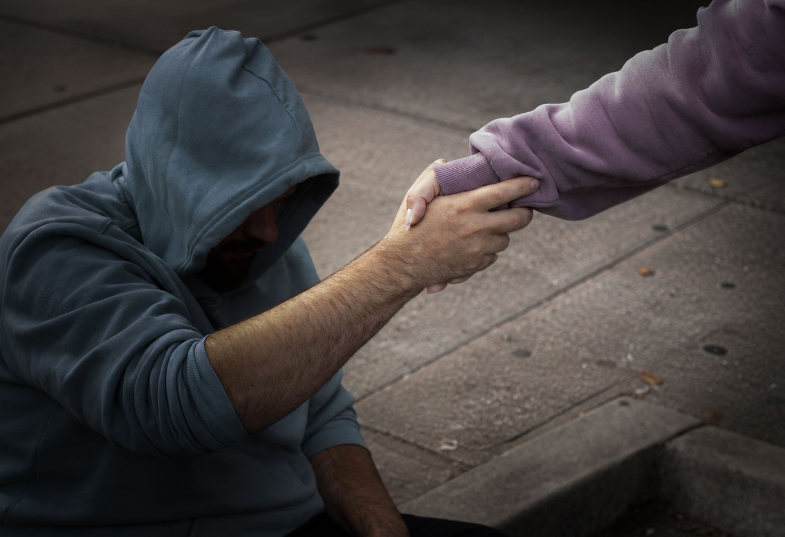

Give water to
the thirsty traveler
There is a particular kind of thirst that has nothing to do with water. I know what it is to need something so completely that the need becomes the whole world, and to watch that need go unmet, day after day, while the rest of the world moves through its routines without a second look.
On the streets I was thirsty in every sense of the word. For warmth. For stability. For someone to see me standing there. Addiction has a way of narrowing the world to the next hour, the next fix, the next way to get through the night. You stop being a person with a history and a future. You become only the present moment of your need.
What I didn't understand then was that the need itself was going into the well. Every sleepless night, every moment of invisibility, every time someone stepped around me on the sidewalk, it was accumulating. Not disappearing. Becoming something.
The well doesn't ask what you put into it. It receives everything.